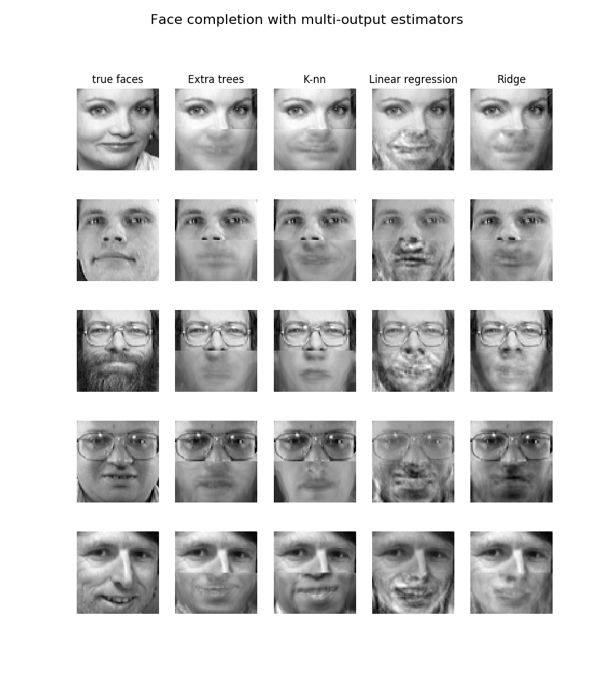

Note
Click here to download the full example code or run this example in your browser via Binder
Face completion with a multi-output estimators¶
This example shows the use of multi-output estimator to complete images. The goal is to predict the lower half of a face given its upper half.
The first column of images shows true faces. The next columns illustrate how extremely randomized trees, k nearest neighbors, linear regression and ridge regression complete the lower half of those faces.
Out:
print(__doc__)
import numpy as np
import matplotlib.pyplot as plt
from sklearn.datasets import fetch_olivetti_faces
from sklearn.utils.validation import check_random_state
from sklearn.ensemble import ExtraTreesRegressor
from sklearn.neighbors import KNeighborsRegressor
from sklearn.linear_model import LinearRegression
from sklearn.linear_model import RidgeCV
# Load the faces datasets
data, targets = fetch_olivetti_faces(return_X_y=True)
train = data[targets < 30]
test = data[targets >= 30] # Test on independent people
# Test on a subset of people
n_faces = 5
rng = check_random_state(4)
face_ids = rng.randint(test.shape[0], size=(n_faces, ))
test = test[face_ids, :]
n_pixels = data.shape[1]
# Upper half of the faces
X_train = train[:, :(n_pixels + 1) // 2]
# Lower half of the faces
y_train = train[:, n_pixels // 2:]
X_test = test[:, :(n_pixels + 1) // 2]
y_test = test[:, n_pixels // 2:]
# Fit estimators
ESTIMATORS = {
"Extra trees": ExtraTreesRegressor(n_estimators=10, max_features=32,
random_state=0),
"K-nn": KNeighborsRegressor(),
"Linear regression": LinearRegression(),
"Ridge": RidgeCV(),
}
y_test_predict = dict()
for name, estimator in ESTIMATORS.items():
estimator.fit(X_train, y_train)
y_test_predict[name] = estimator.predict(X_test)
# Plot the completed faces
image_shape = (64, 64)
n_cols = 1 + len(ESTIMATORS)
plt.figure(figsize=(2. * n_cols, 2.26 * n_faces))
plt.suptitle("Face completion with multi-output estimators", size=16)
for i in range(n_faces):
true_face = np.hstack((X_test[i], y_test[i]))
if i:
sub = plt.subplot(n_faces, n_cols, i * n_cols + 1)
else:
sub = plt.subplot(n_faces, n_cols, i * n_cols + 1,
title="true faces")
sub.axis("off")
sub.imshow(true_face.reshape(image_shape),
cmap=plt.cm.gray,
interpolation="nearest")
for j, est in enumerate(sorted(ESTIMATORS)):
completed_face = np.hstack((X_test[i], y_test_predict[est][i]))
if i:
sub = plt.subplot(n_faces, n_cols, i * n_cols + 2 + j)
else:
sub = plt.subplot(n_faces, n_cols, i * n_cols + 2 + j,
title=est)
sub.axis("off")
sub.imshow(completed_face.reshape(image_shape),
cmap=plt.cm.gray,
interpolation="nearest")
plt.show()
Total running time of the script: ( 0 minutes 1.935 seconds)